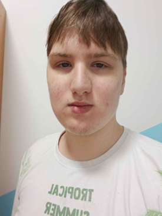
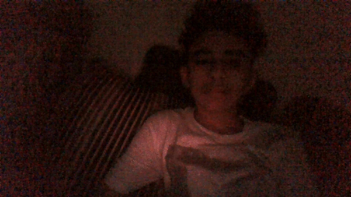

About Us
ForeheadLink is a Tech Company that develop technologic devices, software, VPS and more, running on foreheads. We even devlop game Most notably Kevonz Islamd. We also contribute to gived aways 500,000+ free WiFi routers in 15 muslim countries in 2013.
We have partners with Multiple Other big companies such as Alphabet Inc, Siemens, Nokia, oracle, Micro$oft and vmwaer.
We also develop ForeheadAI, an AI that is powered by a large and gigantic forehead of our Founder & Current CEO instead of trained on internet datas.
Our employees are the mosts intelligence beings in the worlds. Our CEO has 9000 IQ, possibly ranking him in one of the most intelligence peopes.
Our Team
Kaaba Forehead Kedvonze
Founder & CEO of ForeheadLink. Man with a forehead weighing 5000 lbs. Isn't quite good at English. Most of this website was written by him.
Mohammed Emwazi Ashraf
CFO of ForeheadLink, founder of Taliban. Loves playing half life, skidding and making shitty OSes no one cares about.
al-Graci al-Bowar

Furry, lead developer of ForeheadAI, drawer of transformation arts, lover of transformation fetish, father of Graci, father of Bowar, messenger of Dragoneer.